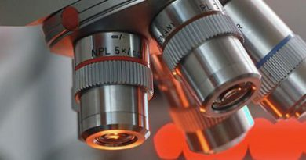

| PROFIL | INFORMASI | DATA STATISTIK | DOWNLOAD | TEKNOLOGI | GALERI | TAUTAN | PPID |
 Pengendalian WBC Pengendalian WBC |
 Komisi II DPRD Provinsi Sumatera Barat Studi Banding Perda Cadangan Pangan DIY Komisi II DPRD Provinsi Sumatera Barat Studi Banding Perda Cadangan Pangan DIY |
 Upacara Hari Kebangkitan Nasional ke-111 Upacara Hari Kebangkitan Nasional ke-111 |
 Halal Bihalal Pegawai Lingkup Dinas Pertanian dan Ketahanan Pangan DIY 2019 Halal Bihalal Pegawai Lingkup Dinas Pertanian dan Ketahanan Pangan DIY 2019 |
 Sosialisasi Mitigasi dan Adaptasi Dampak Perubahan Iklim pada Perkebunan Kakao Sosialisasi Mitigasi dan Adaptasi Dampak Perubahan Iklim pada Perkebunan Kakao |
| Artikel |
| Standar Layanan UPTD BPTP |
| Sertifikat Sistem Pertanian Organik Internasional |
| Proyeksi Kerugian Hasil Petani Akibat Penggunaan Benih Padi Yang Mutunya Dibawah Standar |
| Registrasi Pangan Segar Asal Tumbuhan (PSAT) |
Sistem Jaminan Mutu Dalam Bidang Pertanian |
| Teknologi |
| Peran Laboratorium Pengujian di DIY Penyediaan pangan yang aman bagi masyarakat merupakan salah satu tanggung jawab pemerintah seperti yang diamanatkan dalam Undan-Undan No. 18 tahun |
 Drone Pemantau Lahan Drone Pemantau Lahan |
 Melirik Akuaponik Veltikultur Melirik Akuaponik Veltikultur |
 UGM Luncurkan Aplikasi Petani UGM Luncurkan Aplikasi Petani |
 |